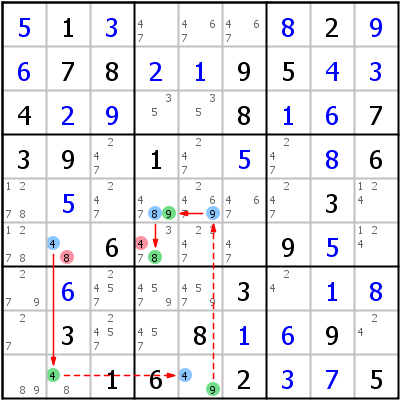

HoDoKu Solving Technique Index: Example for "Alternate Inference Chain Type 2"

Original sudoku:
.1.....2..78..95..4....8..739.1....6.......3...6...9.......3....3..8..9...16.2..5
Use the following line if you want to load the sudoku in HoDoKu:
:0708:48:+51+3...+82+9+678+2+195+4+34+2+9..8+1+6739.1.+5.+86.+5.....3...6...9+5..+6...3.+1+8.3..8+1+69...16.2+3+75::464 862:
The following representation can be pasted in most Sudoku programs:
.----------------.------------------.-------------. | 5 1 3 | 47 467 467 | 8 2 9 | | 6 7 8 | 2 1 9 | 5 4 3 | | 4 2 9 | 35 35 8 | 1 6 7 | :----------------+------------------+-------------: | 3 9 247 | 1 247 5 | 247 8 6 | | 1278 5 247 | 4789 24679 467 | 247 3 124 | | 1278 48 6 | 3478 2347 47 | 9 5 124 | :----------------+------------------+-------------: | 279 6 2457 | 4579 4579 3 | 24 1 8 | | 27 3 2457 | 457 8 1 | 6 9 24 | | 89 48 1 | 6 49 2 | 3 7 5 | '----------------'------------------'-------------'
Representation of the step:
.------------------.---------------------.-------------. | 5 1 3 | 47 467 467 | 8 2 9 | | 6 7 8 | 2 1 9 | 5 4 3 | | 4 2 9 | 35 35 8 | 1 6 7 | :------------------+---------------------+-------------: | 3 9 247 | 1 247 5 | 247 8 6 | | 1278 5 247 | *4789 *24679 467 | 247 3 124 | | 1278 *4-8 6 | *3-478 2347 47 | 9 5 124 | :------------------+---------------------+-------------: | 279 6 2457 | 4579 4579 3 | 24 1 8 | | 27 3 2457 | 457 8 1 | 6 9 24 | | 89 *48 1 | 6 *49 2 | 3 7 5 | '------------------'---------------------'-------------' AIC 4- r6c2 =4= r9c2 -4- r9c5 -9- r5c5 =9= r5c4 =8= r6c4 -8 => r6c4<>4, r6c2<>8
Copyright © 2008-12 by Bernhard Hobiger
Last modified on May 5, 2025 by shorty#3746
(based of the 1to9only Github repo)
All material on this page is licensed under the GNU FDLv1.3.